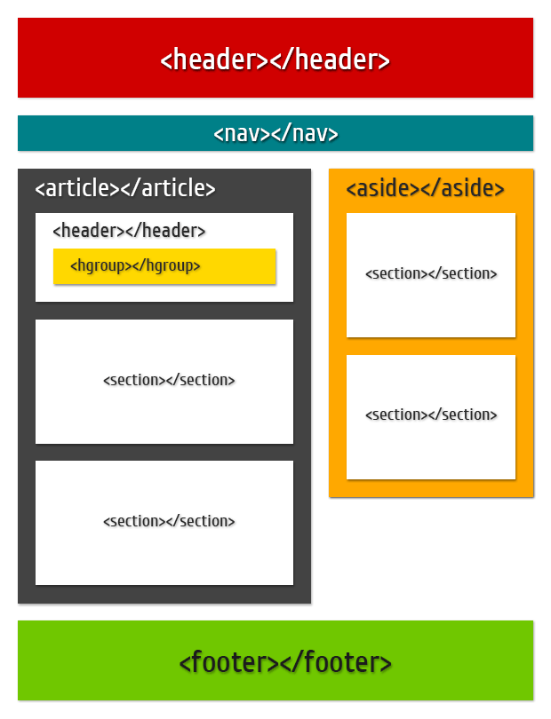

Неделя 3 - Первый класс
День 1. Структура сайта на HTML5
Семантические теги:
Тут должно быть описание тегов, но картинки достаточно:)

Семантические теги
<header> - задает «шапку» сайта или раздела, в которой обычно располагается заголовок.
<nav> - задает навигацию по сайту. Если на странице несколько блоков ссылок, то в него обычно помещают приоритетные ссылки. Также допустимо использовать несколько тегов <nav> в документе. Запрещается вкладывать <nav> внутрь <address>.
<article> - задает содержание сайта вроде новости, статьи, записи блога, форума или др.
<section> - Задаёт раздел документа, может применяться для блока новостей, контактной информации, глав текста, вкладок в диалоговом окне и др. Раздел обычно содержит заголовок. Допускается вкладывать один тег внутрь другого
<hgroup> - Используется для группирования заголовков веб-страницы или раздела. Внутри располагаются теги заголовков от h1 до h6. Данный тег исключён из версии HTML от W3C, но остался в версии WHATWG, будущее элемента пока не определено.
<aside> - Определяет блок сбоку от контента для размещения рубрик, ссылок на архив, меток и другой информации. Такой блок, как правило, называется «сайдбар» или «боковая панель».
<footer> - задаёт «подвал» сайта или раздела, в нём может располагаться имя автора, дата документа, контактная и правовая информация.
День 2. Верстка
Для задания структуры дневника мы использовали 5 блоков - для шапки, главного меню, контента с сайдбаром и подвала. И еще 2 блока чтобы отцентрировать содержимое сайта.
Работа с фоном
Свойство background - это свойство отвечает за фон элемента, к которому оно прописывается через стили. В качестве фона мы можем использовать различные цвета, градиенты, картинки.
Синтаксис:
body {background: url(путь к картинке);} - указываем картинку
body {background: цвет;} - указываем цвет.
body {background: цвет url(путь к картинке);} - указываем цвет и путь к картинке.
День 3. Шрифты
По умолчанию браузер задает свои отступы и поля для элементов сайта. В том числе и для элемента <body> И чтобы эти отступы пропали необходимо использовать сброс или нормализацию стилей. Или прописывать все в ручную.
Обычно отступы дочерних элементов вылезают за пределы родителей и становятся их отступами. Лечить можно прописав обтекание, либо задав родителю свойство родитель (padding:1px;)
Работа со шрифтами
Свойство font - это свойство отвечает за указание шрифта, и имеет множество вариаций.
Синтаксис:
font: 16px/24px Arial, Tahoma, "Trebushet MS", sans-serif;
Так же мы можем указать шрифты которые будут загружаться из интернета.
Свойство font-family: Cuprum; указывает только имя и семейство шрифта.
Семейство шрифтов.
sans-serif - шрифты без засечек (рубленые), лучше использовать на мониторах
serif - шрифты с засечками, лучше использовать в книгах
monospace - моноширные шрифты, ширина у каждого символа одинаковая
cursive курсивные шрифты
fantasy декоративные шрифты
Свойство font-size: 30px; задает размер шрифтов.
Свойство line-height: 30px; задает высоту строки.
День 4. Меню и списки.
Есть специальное свойство для работы со списками - list-style. При помощи него мы можем указать вид маркеров, способ отображения и картинку.
Маркеры в списках:
Для задания маркеров мы можем использовать подсвойство list-style-type
Маркерованный список:
- circle - маркер как круг
- disc - маркер как черная точка
- square - маркер как квадрат
Нумерованный список:
- decimal - арабские числа
- armenian - армянские числа
- georgian - грузинские цифры
- lower-roman - римские цифры в нижнем регистре
- upper-roman - римские цифры большие
- lower-latin - латинские буквы цифры в нижнем регистре
- upper-latin - латинские буквы большие
- none - отменяет маркеры
Для задания позиции маркера мы можем использовать подсвойство list-style-position
Для задания маркера как картинки мы можем использовать list-style-image
Примеры позиционирования и маркеров-картинок:
- inside - это значение указывает что маркер будет использоваться внутри списка и будет являться частью текста.
- outside - это значение указывает что маркер будет использоваться снаружи нашего списка и не будет являться частью нашего текста.
День 5. Псевдоклассы.
При помощи псевдоклассов мы можем влиять на стили при помощи действий пользователя. Задаются через двоеточие
Какие они бывают:
hover - указывает на стили во время наведения курсора мыши на элемент
link - указывает на стили для не посещенных стилей
visited - указывает на стили для уже посещенных ссылок.
active - указывает на стили для активного элемента. Активным элементом (ссылкой) считается элемент на момент клика мышкой
Важно:для того чтобы псевдоклассы работали нормальнго, надо сначало указывать стили visited, потом для hover, и в конце для active
Псевдоклассы hover и active можно применить к любому элементу
first-child - указывают стили для первого тега в своем родителе.
Первый Второй Третий
Четвертый Пятый Шестой
Седьмой Восьмой Девятый